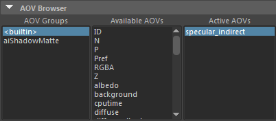
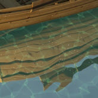
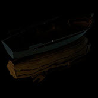
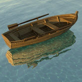
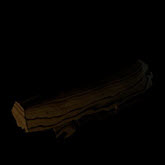
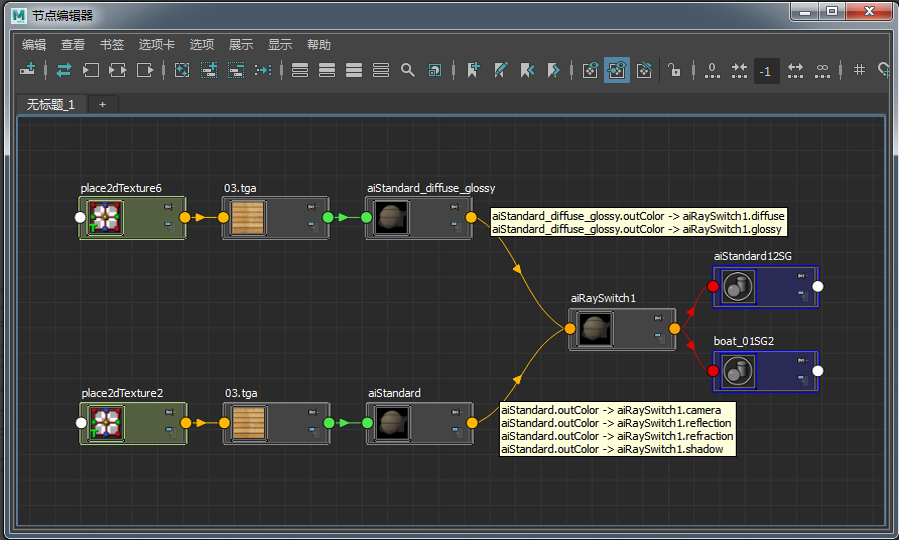
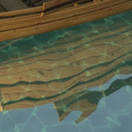

高亮杂点 - 船场景

physical_sky 的太阳导致出现高亮杂点
此场景由一个船模型和一个表示海面的平面组成。两个模型都指定了 standard_surface 着色器。在上图中可以看到，此场景中有许多“高亮杂点”。在这种情况下，它们是由连接到 skydome_light 的 physical_sky 着色器中明亮的太阳圆盘引起的。单纯增加“渲染设置”(Render Settings)中的采样数，很难去除这种噪波。但是，有几种方法可以克服这种噪波。下面我们来介绍其中一些方法。
要下载对应的场景，请单击此处。
AOV
一种确定高亮杂点起因的方法是使用 AOV 渲染场景。
- 打开“渲染设置”(Render Settings)窗口，并选择“AOV”(AOVs)选项卡。在 *AOV 浏览器(AOV Browser)中选择“内置”(Builtin)。在“可用 AOV”(Available AOVs)中，双击 *indirect_specular。新的 AOV 应显示在“激活的 AOV”(Active AOVs)下方。
- 渲染场景，并在 Arnold 渲染视图窗口打开这些 AOV 或查看它们。

我们立刻就能知道它们来自两个地方：
- 船着色器，它有一些镜面反射度。
- 海面着色器，它也有一些镜面反射度。
在渲染这些 AOV 时，可以清楚地看到高亮杂点：
|  |  |
| clamp_max_value：10（默认值） | indirect_specular AOV（船上可见高亮杂点） |
镜面反射粗糙度
在某些情况下，增加 specular_roughness 可帮助减少高亮杂点，因为这实际上是创建了一个更大、更柔和的镜面反射高光。增加指定给船的 standard_surface 着色器的 specular_roughness 可以减少高亮杂点的数量。但是，在本例中，使用这种方法后仍然有一些明显的高亮杂点。
| 低 specular_roughness 值 | specular_roughness：1。高亮杂点已减少，但仍然明显。 |
镜面反射采样数
由于海面着色器的表面几乎就像镜面一样，因此会有极高的镜面反射值从太阳反射到镜面反射的海面上。这些高镜面反射值很难采样，因此在这种情况下，增加 specular_samples 值无助于消除高亮杂点。
|  | |
| 2 | 4 |
光线切换
更好的方法是使用 ray_switch_shader 着色器为_镜面反射和漫反射_光线指定一个更简单的着色器。
- 为船指定一个 ray_switch 着色器。
- 将 standard_surface 着色器连接到 ray_switch_shader 着色器的 diffuse_reflection 和 specular_reflection 光线。确保将 specular_weight 设置为 0。这将强制镜面反射和漫反射光线不计算着色器的镜面反射组件，而这也是产生高亮杂点的源头。
- 将船的 standard_surface 着色器（连同 specular_weight）连接到其余属性（“摄影机”(Camera)、“镜面反射”(Specular Reflection)、“透射”(Transmission)和“阴影”(Shadow)）。
现在观察 AOV，会发现高亮杂点已经不见了：
|  | |
| indirect_specular AOV | 光线切换美景（无高亮杂点） |

两个 standard_surface 着色器 -> ray_switch_shader
区间限定采样值
另一种方法是区间限定场景中像素的输出值。此控制选项会将场景中所有着色器的像素采样数区间限定到指定的最大值。下面的图像显示了区间限定操作对高亮杂点产生的效果。值为 1 时，可完全消除高亮杂点。但这样也会移除渲染的全部动态范围。
|  | |
| clamp_max_value：5 | clamp_max_value：1（无高亮杂点） |